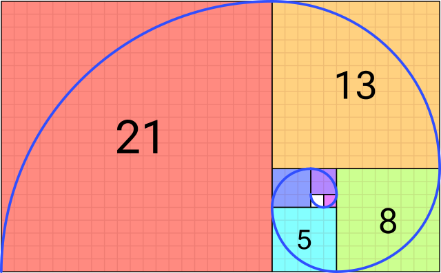

#include<Rcpp.h>
using namespace Rcpp;
// [[Rcpp::export]]
NumericVector add1(NumericVector x) {
NumericVector ans(x.size());
for (int i = 0; i < x.size(); ++i)
ans[i] = x[i] + 1;
return ans;
}Rcpp
WarningNota de Traducción
Esta versión del capítulo fue traducida de manera automática utilizando IA. El capítulo aún no ha sido revisado por un humano.
Cuando la computación paralela no es suficiente, puedes acelerar tu código R usando un lenguaje de programación de más bajo nivel1 como C++, C, o Fortran. Con R mismo escrito en C, proporciona puntos de acceso (APIs) para conectar funciones de C++/C/Fortran a R. Aunque no es imposible, usar lenguajes de bajo nivel para mejorar R puede ser engorroso; Rcpp (Eddelbuettel and François 2011; Eddelbuettel 2013; Eddelbuettel and Balamuta 2018) puede hacer las cosas muy fáciles. Este capítulo te muestra cómo usar Rcpp–la forma más popular de conectar C++ con R–para acelerar tu código R.
Antes de empezar


Necesitas tener Rcpp instalado en tu sistema:
install.packages("Rcpp")Necesitas tener un compilador
Windows: Puedes descargar Rtools desde aquí.
MacOS: Es un poco complicado… Aquí hay algunas opciones:
¡Y eso es todo!
R es genial, pero…
El problema:
Como vimos, R es muy rápido… una vez vectorizado
¿Qué hacer si tu modelo no puede ser vectorizado?
La solución: ¡Usa C/C++/Fortran! ¡Funciona con R!
El problema de la solución: ¿Qué usuario de R conoce alguno de esos?
R ha tenido una API (interfaz de programación de aplicaciones) para integrar código C/C++ con R durante mucho tiempo.
Desafortunadamente, no es muy directo
Entra Rcpp
Uno de los paquetes de R más importantes en CRAN.
Al 22 de enero de 2023, aproximadamente 50% de los paquetes de CRAN dependen de él (directa o indirectamente).
De la descripción del paquete:
El paquete ‘Rcpp’ proporciona funciones de R así como clases de C++ que ofrecen una integración perfecta de R y C++
¿Por qué molestarse?
Para extraer diez números de una distribución normal con sd = 100.0 usando la API de C de R:
SEXP stats = PROTECT(R_FindNamespace(mkString("stats"))); SEXP rnorm = PROTECT(findVarInFrame(stats, install("rnorm"))); SEXP call = PROTECT( LCONS( rnorm, CONS(ScalarInteger(10), CONS(ScalarReal(100.0), R_NilValue)))); SET_TAG(CDDR(call),install("sd")); SEXP res = PROTECT(eval(call, R_GlobalEnv)); UNPROTECT(4); return res;Usando Rcpp:
Environment stats("package:stats"); Function rnorm = stats["rnorm"]; return rnorm(10, Named("sd", 100.0));
Ejemplo 1: Iterando sobre un vector
add1(1:10) [1] 2 3 4 5 6 7 8 9 10 11Hazlo más dulce agregando algo de “azúcar” (del tipo Rcpp)
#include<Rcpp.h>
using namespace Rcpp;
// [[Rcpp::export]]
NumericVector add1Cpp(NumericVector x) {
return x + 1;
}add1Cpp(1:10) [1] 2 3 4 5 6 7 8 9 10 11¿Qué tan rápido?
Comparado con esto:
add1R <- function(x) {
for (i in 1:length(x))
x[i] <- x[i] + 1
x
}
microbenchmark::microbenchmark(add1R(1:1000), add1Cpp(1:1000))Unit: microseconds
expr min lq mean median uq max neval
add1R(1:1000) 51.793 53.1340 76.87384 53.4380 55.8030 2228.526 100
add1Cpp(1:1000) 3.076 3.7715 12.28685 4.6125 7.4795 682.811 100Principales diferencias entre R y C++
Uno es compilado, y el otro interpretado
Indexando objetos: En C++ los índices van de 0 a
(n - 1), mientras que en R es de 1 an.Todas las expresiones terminan con
;(opcional en R).En C++ los objetos necesitan ser declarados, en R no (dinámico).
Fundamentos de C++/Rcpp: Tipos
Además de tipos de datos tipo C (double, int, char, y bool), podemos usar los siguientes tipos de objetos con Rcpp:
Matrices:
NumericMatrix,IntegerMatrix,LogicalMatrix,CharacterMatrixVectores:
NumericVector,IntegerVector,LogicalVector,CharacterVector¡Y más!:
DataFrame,List,Function,Environment
Partes de “un programa Rcpp”
#include<Rcpp.h>
using namespace Rcpp
// [[Rcpp::export]]
NumericVector add1(NumericVector x) {
NumericVector ans(x.size());
for (int i = 0; i < x.size(); ++i)
ans[i] = x[i] + 1;
return ans;
}Línea por línea, vemos lo siguiente:
El
#include<Rcpp.h> es similar alibrary(...)en R, trae todo lo que necesitamos para escribir código C++ para Rcpp.using namespace Rcpp es algo similar adetach(...). Esto simplifica la sintaxis. Si no incluimos esto, todas las llamadas a miembros de Rcpp necesitan ser explícitas, ej., en lugar de escribirNumericVector, necesitaríamos escribirRcpp::NumericVectorEl
//comienza un comentario en C++, en este caso, el// [[Rcpp::export]] comentario es una bandera que Rcpp usa para “exportar” esta función C++ a R.Es la primera parte de la definición de función. Estamos creando una función que devuelve un
NumericVector , se llamaadd1 , tiene un solo elemento de entrada llamadox que también es unNumericVector .Aquí, estamos declarando un objeto llamado
ans , que es unNumericVector con un tamaño inicial igual al tamaño dex . Nota que.size() se llama una “función miembro” del objetox, que es de claseNumericVector.Estamos declarando un for-loop (tres partes):
int i = 0 Declaramos la variablei, un entero, y la inicializamos en 0.i < x.size() Este bucle terminará cuando el valor deiesté en o por encima de la longitud dex.++i En cada iteración,ise incrementará en una unidad.
ans[i] = x[i] + 1 establece el i-ésimo elemento deansigual al i-ésimo elemento dexmás 1.return ans sale de la función devolviendo el vectorans.
Ahora, ¿dónde ejecutar/correr esto?
- Puedes usar la función
sourceCppdel paqueteRcpppara ejecutar scripts .cpp (esto es lo que hago la mayoría del tiempo). - También está
cppFunction, que permite compilar una sola función. - Escribir un paquete de R que funcione con Rcpp.
Por ahora, usemos la primera opción.
Ejemplo ejecutando archivo .cpp
Imagina que tenemos el siguiente archivo llamado norm.cpp
#include <Rcpp.h>
using namespace Rcpp;
// [[Rcpp::export]]
double normRcpp(NumericVector x) {
return sqrt(sum(pow(x, 2.0)));
}Podemos compilar y obtener esta función usando esta línea Rcpp::sourceCpp("norm.cpp"). Una vez compilada, una función llamada normRcpp estará disponible en la sesión actual de R.
Tu turno
Problema 1: Sumar vectores
- Usando lo que acabas de aprender sobre Rcpp, escribe una función para sumar dos vectores de la misma longitud. Usa la siguiente plantilla
#include <Rcpp.h>
using namespace Rcpp;
// [[Rcpp::export]]
NumericVector add_vectors([declarar vector 1], [declarar vector 2]) {
... magia ...
return [algo];
}- Ahora, tenemos que verificar las longitudes. Usa la función
stoppara asegurarte de que las longitudes coincidan. Agrega las siguientes líneas en tu código
if ([alguna condición])
stop("un mensaje de error arbitrario :)");Problema 2: Serie de Fibonacci

Cada elemento de la secuencia está determinado por lo siguiente:
F(n) = \left\{\begin{array}{ll} n, & \mbox{ si }n \leq 1\\ F(n - 1) + F(n - 2), & \mbox{de otro modo} \end{array}\right.
Usando recursiones, podemos implementar este algoritmo en R de la siguiente manera:
fibR <- function(n) {
if (n <= 1)
return(n)
fibR(n - 1) + fibR(n - 2)
}
# ¿Está funcionando?
c(
fibR(0), fibR(1), fibR(2),
fibR(3), fibR(4), fibR(5),
fibR(6)
)[1] 0 1 1 2 3 5 8Ahora, ¡traduzcamos este código a Rcpp y veamos cuánto aumento de velocidad obtenemos!
Problema 2: Serie de Fibonacci (solución)
Code
#include <Rcpp.h>
// [[Rcpp::export]]
int fibCpp(int n) {
if (n <= 1)
return n;
return fibCpp(n - 1) + fibCpp(n - 2);
}microbenchmark::microbenchmark(fibR(20), fibCpp(20))Unit: microseconds
expr min lq mean median uq max neval
fibR(20) 5609.450 5662.147 5987.1950 5688.247 5893.8660 8474.925 100
fibCpp(20) 14.133 14.378 27.7668 19.084 21.6515 931.549 100RcppArmadillo y OpenMP
Más amigable que RcppParallel… al menos para usuarios ‘Uso-Rcpp-pero-realmente-no-sé-mucho-sobre-C++’ (¡como yo!).
Debe ejecutar solo llamadas ‘Thread-safe’, así que llamar R dentro de bloques paralelos puede causar problemas (casi todo el tiempo).
Usa objetos
arma, ej.arma::mat,arma::vec, etc. O, si estás acostumbrado a ellos objetosstd::vectorya que estos son thread-safe.La Generación de Números Pseudo Aleatorios no es muy directa… Pero C++11 tiene un buen conjunto de funciones que pueden usarse junto con OpenMP
Necesitas pensar sobre cómo funcionan los procesadores, memoria caché, etc. De otro modo, podrías meterte en problemas… si tu código es más lento cuando se ejecuta en paralelo, entonces probablemente estés enfrentando false sharing
Si R se cuelga… intenta ejecutar R con un debugger (ver Sección 4.3 en Writing R extensions):
~$ R --debugger=valgrind
Flujo de trabajo de RcppArmadillo y OpenMP
Dile a Rcpp que necesitas incluir eso en el compilador:
#include <omp.h> // [[Rcpp::plugins(openmp)]]Dentro de tu función, establece el número de núcleos, ej.
// Estableciendo los núcleos omp_set_num_threads(cores);Dile al compilador que ejecutarás un bloque en paralelo con OpenMP
#pragma omp [directivas] [opciones] { ...tu código paralelo elegante... }Necesitarás especificar cómo OMP debe manejar los datos:
shared: Por defecto, todos los hilos acceden a la misma copia.private: Cada hilo tiene su propia copia, no inicializada.firstprivateCada hilo tiene su propia copia, inicializada.lastprivateCada hilo tiene su propia copia. El último valor usado se devuelve.
Establecer
default(none)es una buena práctica.¡Compila!
Ej 5: RcppArmadillo + OpenMP
Nuestra propia versión de la función dist… ¡pero en paralelo!
#include <omp.h>
#include <RcppArmadillo.h>
// [[Rcpp::depends(RcppArmadillo)]]
// [[Rcpp::plugins(openmp)]]
using namespace Rcpp;
// [[Rcpp::export]]
arma::mat dist_par(const arma::mat & X, int cores = 1) {
// Algunas constantes
int N = (int) X.n_rows;
int K = (int) X.n_cols;
// Salida
arma::mat D(N,N);
D.zeros(); // Rellenando con ceros
// Estableciendo los núcleos
omp_set_num_threads(cores);
#pragma omp parallel for shared(D, N, K, X) default(none)
for (int i=0; i<N; ++i)
for (int j=0; j<i; ++j) {
for (int k=0; k<K; k++)
D.at(i,j) += pow(X.at(i,k) - X.at(j,k), 2.0);
// Calculando raíz cuadrada
D.at(i,j) = sqrt(D.at(i,j));
D.at(j,i) = D.at(i,j);
}
// Mi bonita matriz de distancia
return D;
}# Simulando datos
set.seed(1231)
K <- 5000
n <- 500
x <- matrix(rnorm(n*K), ncol=K)
# ¿Estamos obteniendo lo mismo?
table(as.matrix(dist(x)) - dist_par(x, 4)) # Solo ceros
0
250000 # ¡Benchmarking!
microbenchmark::microbenchmark(
dist(x), # stats::dist
dist_par(x, cores = 1), # 1 núcleo
dist_par(x, cores = 2), # 2 núcleos
dist_par(x, cores = 4), # 4 núcleos
times = 1,
unit = "ms"
)Unit: milliseconds
expr min lq mean median uq
dist(x) 1286.3352 1286.3352 1286.3352 1286.3352 1286.3352
dist_par(x, cores = 1) 1037.6427 1037.6427 1037.6427 1037.6427 1037.6427
dist_par(x, cores = 2) 783.6094 783.6094 783.6094 783.6094 783.6094
dist_par(x, cores = 4) 659.4235 659.4235 659.4235 659.4235 659.4235
max neval
1286.3352 1
1037.6427 1
783.6094 1
659.4235 1Ej 6: El futuro
future es un paquete de R que fue diseñado “para proporcionar una forma muy simple y uniforme de evaluar expresiones de R de forma asíncrona usando varios recursos disponibles para el usuario.”
Los objetos de clase
futureestán resueltos o no resueltos.Si se consultan, los valores Resueltos se devuelven inmediatamente, y los valores No resueltos bloquearán el proceso (es decir, esperarán) hasta que se resuelvan.
Los futures pueden ser paralelos/seriales, en una sola computadora (local o remota), o un cluster de ellas.
Veamos un breve ejemplo
library(future)
plan(multicore)
# Estamos creando una variable global
a <- 2
# Crear los futures solo tiene el tiempo de sobrecarga (configuración)
system.time({
x1 %<-% {Sys.sleep(3);a^2}
x2 %<-% {Sys.sleep(3);a^3}
})
## user system elapsed
## 0.024 0.014 0.038
# Esperemos solo 5 segundos para asegurarnos de que todos los núcleos hayan regresado
Sys.sleep(3)
system.time({
print(x1)
print(x2)
})
## [1] 4
## [1] 8
## user system elapsed
## 0.004 0.000 0.004Pista bonus 1: Simulando \pi
Sabemos que \pi = \frac{A}{r^2}. Lo aproximamos agregando aleatoriamente puntos x a un cuadrado de tamaño 2 centrado en el origen.
Entonces, aproximamos \pi como \Pr\{\|x\| \leq 1\}\times 2^2

El código R para hacer esto
pisim <- function(i, nsim) { # Nota que no usamos la -i-
# Puntos aleatorios
ans <- matrix(runif(nsim*2), ncol=2)
# Distancia al origen
ans <- sqrt(rowSums(ans^2))
# Pi estimado
(sum(ans <= 1)*4)/nsim
}library(parallel)
# Configuración
cl <- makePSOCKcluster(4L)
clusterSetRNGStream(cl, 123)
# Número de simulaciones que queremos que cada una ejecute
nsim <- 1e5
# Necesitamos hacer que -nsim- y -pisim- estén disponibles para el
# cluster
clusterExport(cl, c("nsim", "pisim"))
# Benchmarking: parSapply y sapply ejecutarán esta simulación
# cien veces cada una, así que al final tenemos 1e5*100 puntos
# para aproximar pi
microbenchmark::microbenchmark(
parallel = parSapply(cl, 1:100, pisim, nsim=nsim),
serial = sapply(1:100, pisim, nsim=nsim),
times = 1
)Unit: milliseconds
expr min lq mean median uq max neval
parallel 288.7032 288.7032 288.7032 288.7032 288.7032 288.7032 1
serial 388.2122 388.2122 388.2122 388.2122 388.2122 388.2122 1ans_par <- parSapply(cl, 1:100, pisim, nsim=nsim)
ans_ser <- sapply(1:100, pisim, nsim=nsim)
stopCluster(cl) par ser R
3.141762 3.141266 3.141593 Ver también
- Package parallel
- Using the iterators package
- Using the foreach package
- 32 OpenMP traps for C++ developers
- The OpenMP API specification for parallel programming
- ‘openmp’ tag in Rcpp gallery
- OpenMP tutorials and articles
Para más, revisa el CRAN Task View on HPC
En general, un lenguaje de programación de bajo nivel es “un lenguaje de programación que proporciona poca o ninguna abstracción del conjunto de arquitectura de una computadora […]” (wiki), sin embargo, aquí usamos ese término para referirnos a lenguajes de programación que están más cerca del código máquina de lo que está R.↩︎